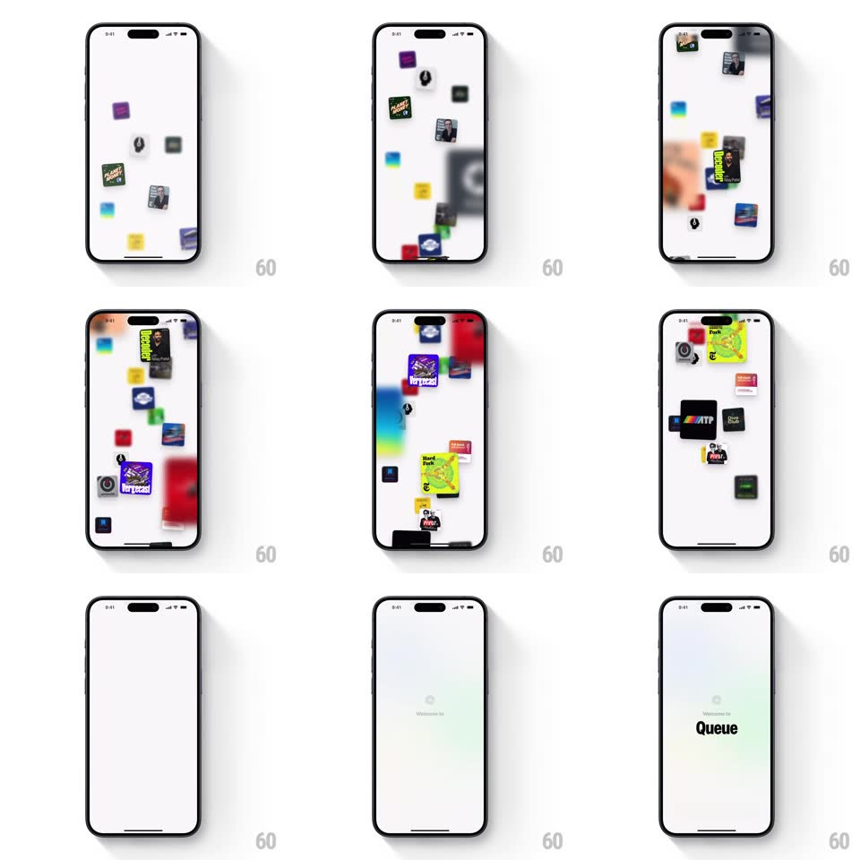

Media
Frame-by-frame

Rebuild this interaction 1:1: Queue's splash - podcast artworks drift in from the edges of the blank white screen and float until they fill it, then everything fades to a soft gradient as the Queue wordmark scales in and the button springs up.

Rebuild this interaction 1:1: Queue's splash - podcast artworks drift in from the edges of the blank white screen and float until they fill it, then everything fades to a soft gradient as the Queue wordmark scales in and the button springs up. ## Integration Integration: stack-agnostic spec - springs given as stiffness/damping, timed motions as duration + curve; map every value to your framework and animation library of choice. ## Scene A white launch screen. Square podcast artworks (a couple dozen distinct covers) float in loose scatter. The final state: pale blue-green radial gradient, centered Queue logo mark above the bold "Queue" wordmark, a rounded button beneath. ## Motion spec Pattern: multi-stage ambient entrance. - Stage 1 (0-2.5s): artworks enter from random off-screen edges one at a time (80ms apart), each gliding to a random resting position (ease-out 700ms) with a slight settle rotation (+/-8deg) - no two share a trajectory. - Once landed, each artwork idles: slow drift (translate +/-10px on a random 4-7s loop) with a barely-there breathing scale (1 -> 1.02). - Stage 2 (2.5-3.2s): the whole field fades out (opacity -> 0, 500ms) while the background crossfades to the pale gradient. - Stage 3: the logo mark scales in (0.5 -> 1, spring ~380/17, overshoot visible, 450ms), then the wordmark fades + rises 10px (250ms, 100ms later), then the button springs up from below (translateY 24px -> 0, spring ~320/20, 350ms, 200ms later). ## Calibration - The artwork field never overlaps the center - the middle of the screen stays clear for the logo reveal. - Total sequence about 4s; skippable on tap. ## Reduced motion Single crossfade from white to the logo state. ## Don't miss - Artworks are slightly different sizes (0.8x-1.2x) - a uniform grid kills the drift feel. - The gradient is centered behind the logo - radial, not linear.